Tutorial 1: Getting started¶
This tutorial shows you the basic functionalities of the web site using one of the example projects. The tutorial is split into three sections, each describing one of the main tabs: Projects, Features, and Classification.
Projects¶
You can manage your projects under the Projects tab. Here you can create, activate, and delete projects. It also allows you to inspect project details and upload additional sequence data or labeling files for your projects.
Create example projects¶
To get started, let’s first create a project. To load an example project, go to the Project tab and click on the Create button.

A list of example projects can be found at the bottom of the page. Select yeast-expression project and click on the Load project button to initiate the example project.

You will be redirected to your list op projects, which should contain the yeast-expression project.
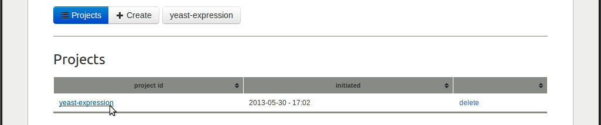{kind=link}
Load a second example project by clicking the Create button again. Select the A. niger high-level secretion and load the project. Again, you will be redirected to your list of projects, which should now contain two projects.

The list of projects provides a link to the project’s details page in the first column, the project initiation time in the second column, and a delete link in the third column. The delete link will delete all files related to the project, so be careful with that.
Activating projects¶
Notice that the user bar, situated underneath the main tabs, indicates which project is currently active.

If you have multiple projects, an additional select project link will appear, which allows you to activate another project.

It is important to note that the features and classification tabs will show the data of the active project. Remember that the user bar always shows you which project is active and allows you to activate another project.
Use the user bar to select the yeast-expression project, which will redirect you to the details page of that project.
Project details¶
Activating a new project will always redirect you to that project’s details page. On this page, the active button (the blue one) shows the name of the project.

If you have multiple projects, this button turns into a drop-down button where you can select one of the projects (the same as in the user bar).

If you click the Download button on the right, all data of the currently active project will be zipped into a zip-file and downloaded to your computer. The zip-file contains all project data: the sequence data, calculated features data, and trained classifiers data.

Protein sequece data¶
The Protein sequence data shows the available sequence data for this project.

In case of the yeast-expression project, both ORF (nucleotide) and protein (amino acid) sequences are available. With the download link you can download the corresponding FASTA files to your computer. If you have FASTA files with (predicted) secondary structure or solvent accessibility sequences, you can use the upload links to upload them.
Protein labelings¶
The Labeling table shows the available labelings for this project.

A labeling is a mapping from each protein to a label, thereby separating the set of proteins into different classes. The expression labeling of the yeast-expression splits the 2000 proteins into two classes: 1000 proteins with the label low, and 1000 proteins with the label high. All projects obtain a default labeling upon project creation. This is the one_class labeling, in which all proteins obtain the same label (all).
For every labeling, the table shows: the name of the labeling in the first column; the different classes and the number of proteins per class in the second column, the number of classes in the third column, and a download link in the third column.
The form at the bottom of the page can be used to upload additional labeling files.

Consult the File Formats documention for more information on the labeling file format. To see an example, you can download the labeling file of the yeast-expression project.
Features¶
Click on the Features tab to go the features area, which provides feature calculation and visualization. If you are not familiar with features, more information about this topic can be found on the Features page.
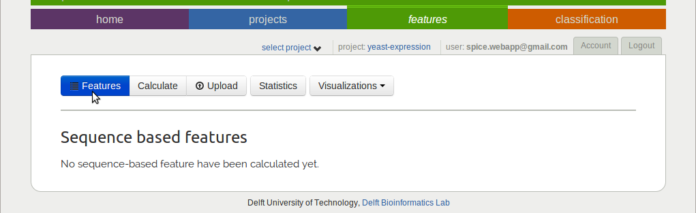{kind=link}
Since you have not calculated any features yet, this page will show an empty list.
Feature calculation¶
Click on the Calculate button to go to the feature calculation page.

Here, a list with sequence-based feature categories is shown. For each feature category one or more drop-down boxes enables setting some parameters and the Calculate button will put the feature calculation job in the job queue on the compute servers. Although feature calculation usually does not take long, if the compute server is busy, your job might have to wait in queue for a while. More information about the available sequence-based features can be found on the SPiCE features page.
Once you have calculated some features, a table with calculated feature categories will occur under the Features button, in which the first column describes the name of the feature category, the second column lists the used parameters, the third column shows the number of features in this category, and the last column provides a link to delete these features.

With the yeast-expression project still active, calculate the amino acid composition with the number of segments parameter set to 1, and calculate the signal average features with parameters AA scale set to Georgiev, window set to 21, and edge set to 100.
If the feature calculation is finished, click on the Statistics button to start exploring them. But before explaining about the feature statistics and visualization possibilities, the filter sidebar will be introduced first.
Filter sidebar¶
The filter sidebar is used throughout the website enabling users to select features (feature matrix columns) and protein classes (feature matrix rows of proteins sharing the same class label). By default the side bar is hidden on the right side. You can click on the dark gray tab with the arrow to show and hide it.
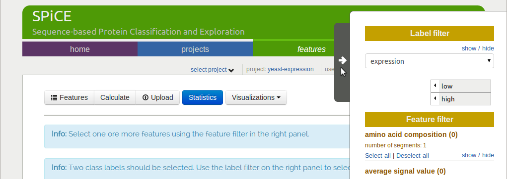{kind=link}
The Label filter at the top can be used to select protein classes.
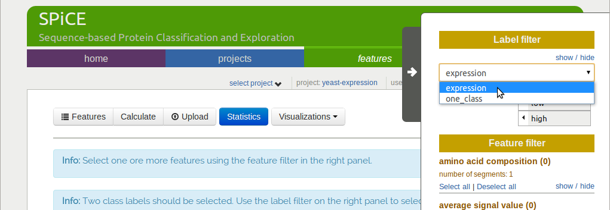{kind=link}
The drop-down box can be used to select one of the available labelings. The yeast-expression project has the default one-class labeling, in which each protein obtains the same label, and an expression labeling, in which the proteins are separated into a low and high expression class, each containing 1000 proteins.
Use the drop-down box to select the expression labeling.
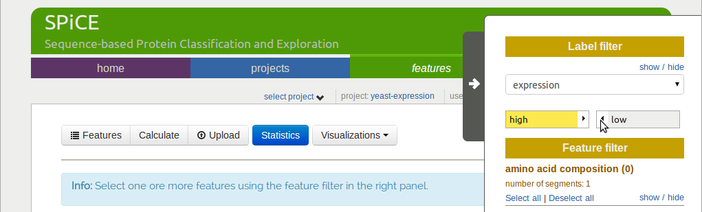{kind=link}
All the labels of the currently selected labeling are shown underneath the drop-down box, which should now show the low and high label. The labels on the left (in yellow) are selected and the labels on the right (in gray) are not selected. You can click on the arrow of a label button to select or deselect it, i.e. to move it from left to right or the other way around.
In order to show t-statistics, exactly two labels (protein classes) need to be selected. Select both the low and the high label. The t-statistics table remains empty, because we first need to select for what features we want to see the t-value, which can be done with the Feature filter.
The Feature filter shows all feature categories that have been calculated thus far. The show/hide link can be used to show or hide the features of the corresponding feature category. By default, all feature are hidden.
Click on the show/hide link of the Amino Acid Composition category to show its features.
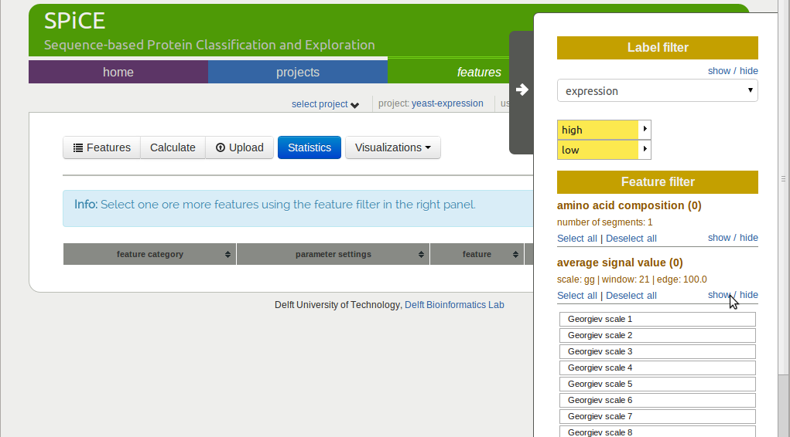{kind=link}
You can click on the features to select them. To select multiple features, hold down the Ctrl button while clicking the features, or hold down the left mouse button while drawing a rectangle over the features you want to select. The table with t-statistics updates as soon as you (de)select features.
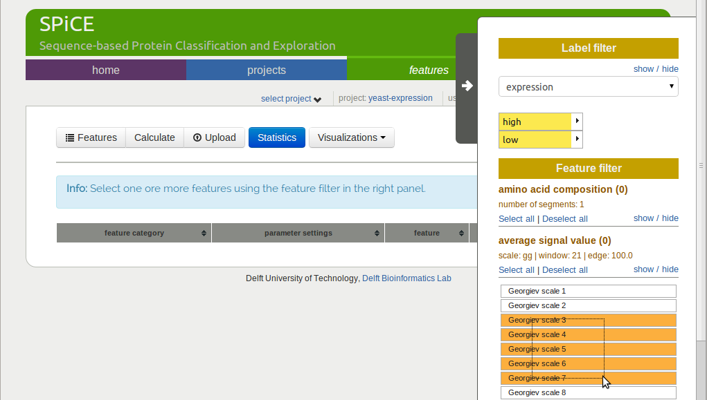{kind=link}
The Select all and Deselect all links at the top can be used to select all and deselect all features of the corresponding feature category. The number between brackets behind the feature category name indicates how many of the features of that category are selected.

Use the Select all link to select all features of the amino acid composition and use the Deselect all link to deselect all average signal value features.
Feature statistics¶
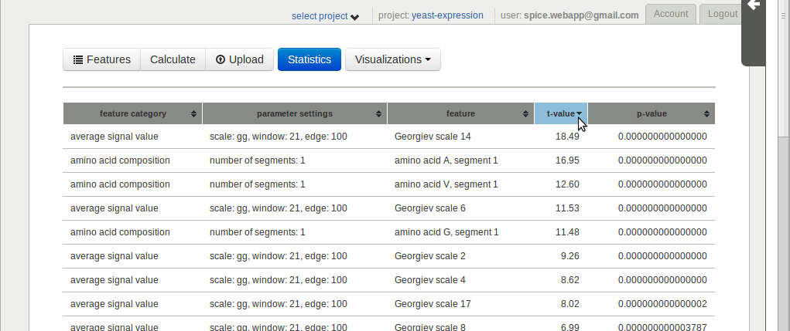{kind=link}
The table with t-statistics shows one row per feature, providing the feature id, feature category name, parameter settings, feature name, t-value, and corresponding p-value in the six columns.
Clicking the t-value header sorts the table by that column. Features S, segment 1 and A, segment 1 have the lowest and highest t-values respectively. In combination with a very small p-value, this indicates different class means for these features.
Use the feature filter to select the S segment 1 and the A segment 1 feature (hold down the Ctrl button to select multiple features), the table should now contain only two rows, showing both selected features.
Histograms¶
Histograms can be used to visualize feature value distributions for the different protein classes. Use the Visualizations drop-down button to select histogram.
The website should have remembered what labels and features were selected (this requires that cookies are enabled), in which case the histogram of the A, segment 1 and the S, segment 1 feature are shown.
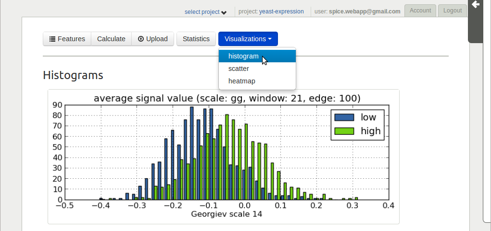{kind=link}
The distributions clearly show different class means for classes low and high.
Scatter plots¶
With features A, segment 1 and S, segment 1 still selected, choose the scatter option from the Visualizations drop-down button.
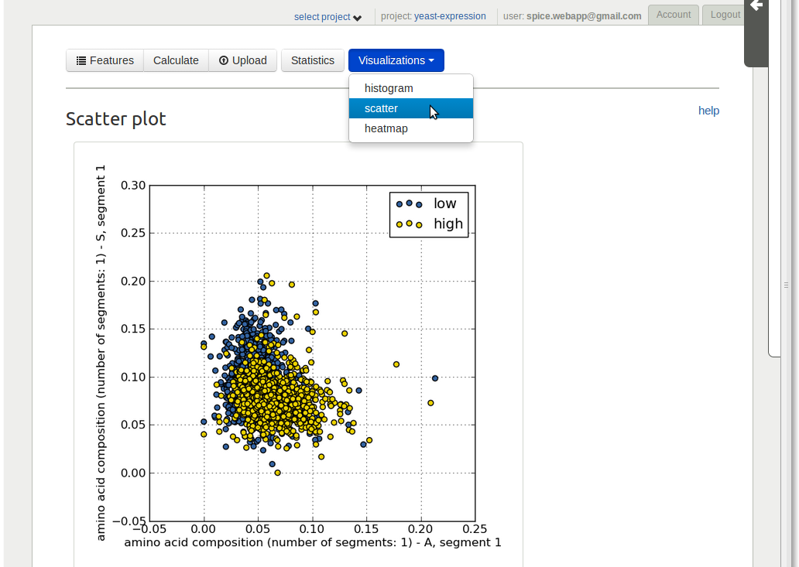{kind=link}
A scatter plot is shown with the S, segment 1 feature values on the y-axis and the A, segment 1 feature values on the x-axis. Proteins in class high are shown in yellow and proteins in class low in blue. The proteins with label high are now on top of the proteins with label low. This depends on the order in which the labels in the Label filter are selected.
Notice that, since a scatter plot has only two axes, a plot can only be shown if exactly two features (one per axis) are selected.
Clustered heat map¶
Use the Feature filter to select all features in the Amino acid composition category. Afterwards select the heatmap option from the Visualizations drop-down button. A heat map with hierarchically clustered rows (proteins) and columns (features) is shown. Depending on the size of the feature matrix, it can take a minute or two for the heat map to appear.
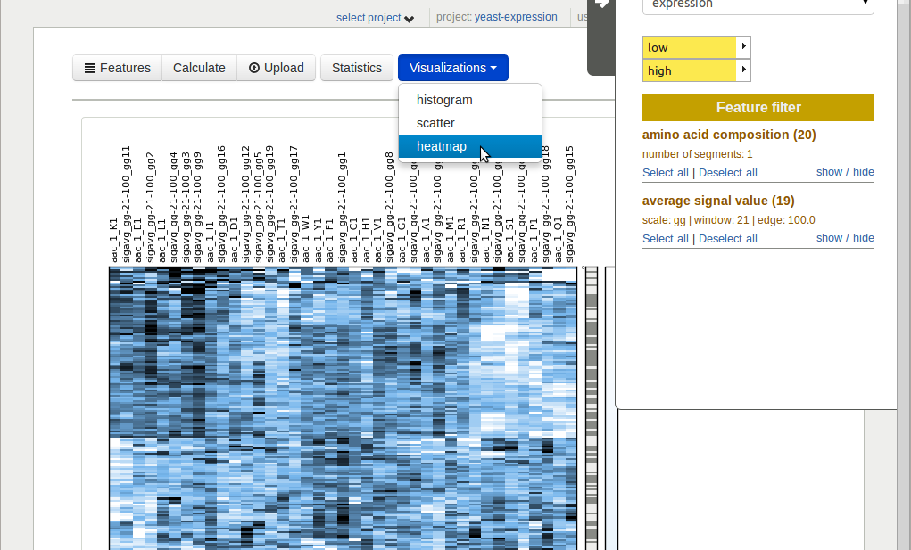{kind=link}
The heat map visualizes the feature matrix. The columns are the selected features and the rows are proteins with the selected class labels. The feature values are standardized (mean 0.0, std 1.0) per feature (column). The column on the right shows the class labels, white for label high and gray for label low.
Classification¶
The t-statistics and visualizations showed that for some features, the feature-value distributions of the classes low and high have different means. This indicates that these features can be used to predict a protein’s class label. Let’s try this by training a classifier that uses these features to predict if a proteins belongs to either the low or the high class. A cross-validation protocol is used to determine how well this can be predicted using the selected features.
First calculate some more features. Go to the features tab and click the Calculate button. Almost at the bottom of the list, click on the Calculate button of the Codon composition feature category to have these features calculated. Wait until calculation is finished.
New classifier¶
Click the Classification tab and click the Create button.

Use the Feature filter to select the 20 amino acid composition features, select 10 cross-validation loops, and the k-nearest neighbor classifier with uniform weights. Click the Run button to start the experiment.

You will be redirected to the Results page, where the current status of your job is shown in the table at the bottom. Depending on how busy the server is, the job might have to wait in queue for a while.
Add two more classification jobs, both for a linear discriminant analysis (LDA) classifier and 10 cross-validation loops. For the first one, use all amino acid composition features as before. For the second one, use and all codon composition features.
Classification results¶
Classification results are shown in the Results table as soon as a job is finished.
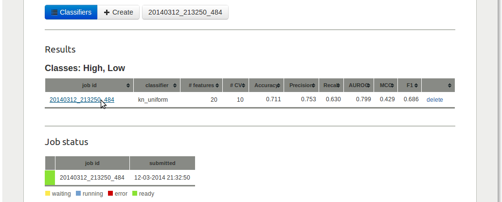{kind=link}
The table shows different performance measures for each classifier. With an area under the ROC-curve (AUROC) of 0.85, the 64 codon composition features provided best classification performance.
Classifier details¶
Click on the job with the 20 amino acid composition features to see more detailed results. At the top, some classification settings and a table with the cross-validation results are shown.
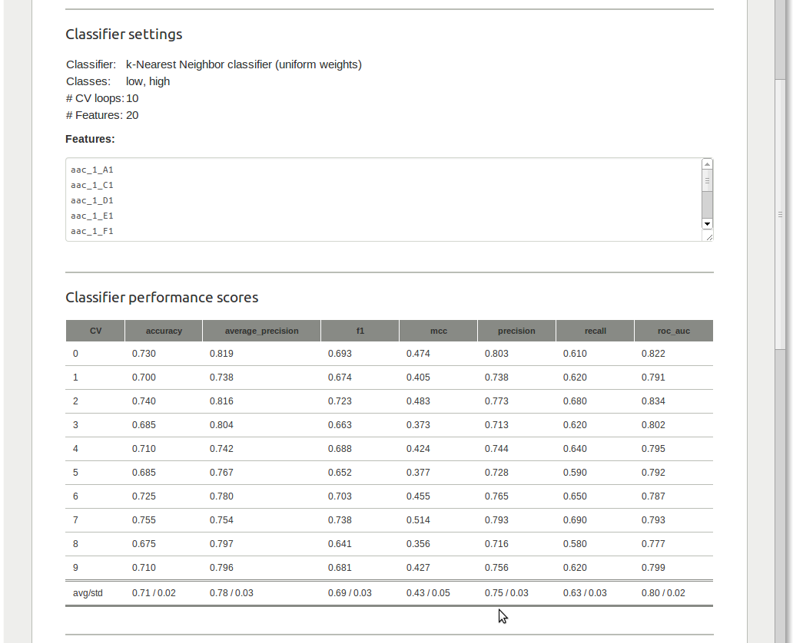{kind=link}
In case of a 2-class classification problem, an ROC-curve is shown underneath.
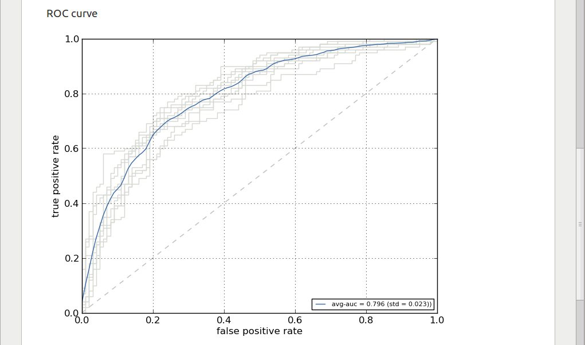{kind=link}
The gray ROC-curves show the cross-validation results and the blue curve shows the average ROC-curve. The area under the ROC-curve (and the standard deviation for the different CV-loops) are given in the legend.
The classifier details page also allows you to run a trained classifier on another data set. To do so, you first need to create a new project with a FASTA file that contains the sequences for which you would like to have predicted classes.
Test your classifier¶
To test a trained classifier on another data set, go to the details page of one of the classifiers. Click the Run button and use the dropdown box to select the aniger-secretion data set.
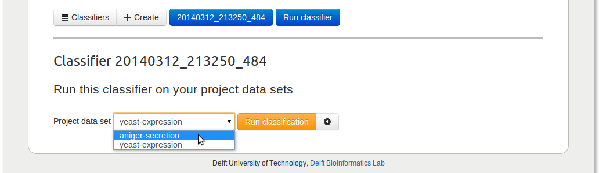{kind=link}
Since the required features are not yet calculated for this project, this will be done automatically behind the scenes. As soon as the features are calculated, the classifier will be run on this data set. Both the feature calculation job and the classification job are put in queue, so it might take a while for them to be finished depending on how busy the compute server is.
Links to a file with binary predictions and predicted class probabilities (if available for the classifier) will be offered in a table when classification is finished.
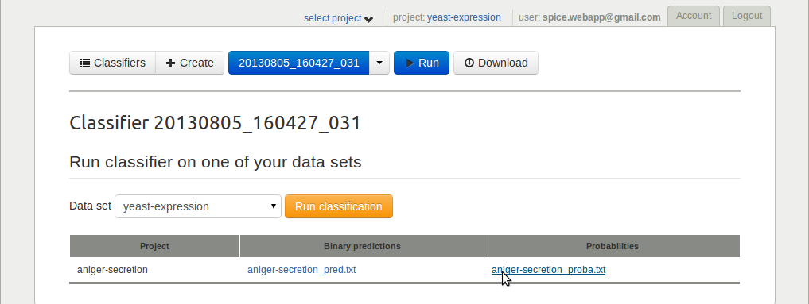{kind=link}
Download raw results¶
Finally, all classifier details can be downloaded as zip-file using the Download button.
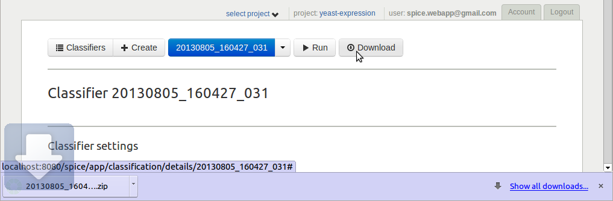{kind=link}
This finalizes the first tutorial, which covered most of the SPiCE website functionalities. If you have any suggestions for improvements, or if you find any bugs, please let me know (spice.webapp@gmail.com).